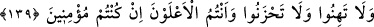
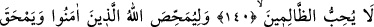
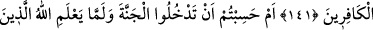
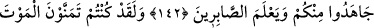
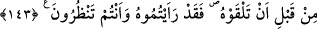

EĞER İNANIYORSANIZ
139. Gevşeklik göstermeyin, üzüntüye kapılmayın. Eğer inanmışsanız, üstün
gelecek olan sizsiniz.
140. Eğer siz (Uhud’da) bir acıya uğradınızsa, (Bedir’de de düşmanınız olan) o
kavim de benzer bir acıya uğramıştır. O günleri biz insanlar arasında döndürür
dururuz (zaferi bazen bir topluma bazen öteki topluma nasip ederiz.) Ta ki Allah,
îman edenleri ortaya çıkarsın ve aranızdan şahidler edinsin. Allah zâlimleri
sevmez.
141. Bir de (böylece) Allah, îman edenleri günahlardan temize çıkarmak, kâfirleri
de helâk etmek ister.
142. Yoksa Allah içinizden cihad edenleri belli etmeden, sabredenleri ortaya
çıkarmadan cennete gireceğinizi mi sandınız?
143. Andolsun ki siz, ölümle yüzyüze gelmezden önce onu temennî ederdiniz. İşte
şimdi onu karşınızda gördünüz.
“En üstün olduğunuz halde”. Yani düşmanlarınız değil, siz en üstün ve galipsiniz.
Çünkü önceki kâfirlerin durumlarında sizin de müşâhede ettiğiniz gibi düşmanlarınızın
sonu yok olmaktır. Zira bâtıl yok olmaya mahkûmdur.
“Gevşemeyin”, zaafa düşmeyin. “Uhud günü başınıza gelen; yaralanma gibi
musîbetler yüzünden cihad husûsunda zaaf göstermeyin” demektir. Aranızdan ölüp
gidenlere “üzülmeyin.” Bu, bir nehy sîgası olup müslümanlara üzülmeyi yasaklamak
için değil, sabır verip teskîn etmek için getirilmiştir.
“Eğer inanıyorsanız” bu şartın cevabı, mahzûf olup geride zikredilen fiiller bu
cevabın ne olduğunu göstermektedir: “İnanıyorsanız, üzülmeyin, gevşemeyin”
demektir. Çünkü îman kalbin güçlü olmasını, Allah’ın yaptıklarına güvenmeyi,
düşmanlarına fazla aldırmamayı gerektirir.